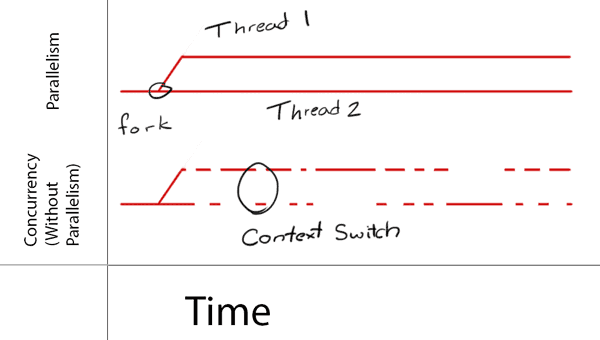

基础容易混淆知识:
串行(Serial) VS. 并行(Concurrent)
串行和并行描述的是任务和任务之间的执行方式. 串行是任务A执行完了任务B才能执行, 它们俩只能顺序 执行. 并行则是任务A和任务B可以同时执行.同步(Synchronous) VS. 异步(Asynchronous)
同步和异步描述的其实就是函数什么时候返回. 比如用来下载图片的函数A: {download image}, 同步函数只有在image下载结束之后才返回, 下载的这段时间函数A只能搬个小板凳在那儿坐等... 而异步函数, 立即返回. 图片会去下载, 但函数A不会去等它完成. So, 异步函数不会堵塞当前线程去执行下一个函数!并发(Concurrency) VS. 并行(Parallelism)
并发是程序的属性(property of the program), 而并行是计算机的属性(property of the machine).
并行和并发都是用来让不同的任务可以"同时执行", 只是并发是伪同时, 而并行是真同时. 假设你有任务T1和任务T2(这里的任务可以是进程也可以是线程):
其实我们平常说的并发编程包括狭义上的"并行"和"并发", 你不能保证你的代码会被并行执行, 但你可以以并发的方式设计你的代码. 系统会判断在某一个时刻是否有可用的core(多核CPU核心), 如果有就并行(parallelism)执行, 否则就用context switch来分时并发(concurrency)执行. 最后再以Ray大神的话结尾: Parallelism requires Concurrency, but Concurrency does not guarantee Parallelism!
iOS多线程
1.Pthrea
可以自己了解
2.NSThread
经过苹果封装后直接面对对象的，可以直接操控线程对象，但是生命周期需要我们自己管理，偶尔使用。例如NSThrea mainthread可以获取当前线程类，知道当前线程的各种属性用于调试
创建线程并启动
- 先创建再启动
NSThread *thread = [[NSThread alloc] initWithTarget:self selector:@selector(run:) object:nil]; [thread start]; 创建并启动
[NSThread detachNewThreadSelector:@selector(run:) toTarget:self withObject:nil];- 用oc方法创建启动（不安全）
[self performSelectorInBackground:@selector(run:) withObject:nil]; 其他方法
//取消线程
- (void)cancel;
//启动线程
- (void)start;//判断某个线程的状态的属性
@property (readonly, getter=isExecuting) BOOL executing;
@property (readonly, getter=isFinished) BOOL finished;
@property (readonly, getter=isCancelled) BOOL cancelled;//设置和获取线程名字
-(void)setName:(NSString *)n;
-(NSString *)name;//获取当前线程信息
+ (NSThread *)currentThread;//获取主线程信息
+ (NSThread *)mainThread;//使当前线程暂停一段时间，或者暂停到某个时刻
+ (void)sleepForTimeInterval:(NSTimeInterval)time;
+ (void)sleepUntilDate:(NSDate *)date;
- 用oc方法创建启动（不安全）
3.GCD
Grand Central Dispatch,是苹果为多核并行运算提出的解决办法，或自动管理线程生命周期
任务和队列
这是在GCD中此案有的重要概念：任务和队列
* 任务：即即操作，你想要干什么，说白了就是一段代码，在 GCD 中就是一个 Block，所以添加任务十分方便。任务有两种执行方式： 同步执行 和 异步执行，他们之间的区别是是否会创建新的线程。
同步（sync）和异步（async）的主要区别是在于会不会阻塞当前线程，直到block中任务执行完毕；
同步就是阻塞当前线程并等待block中的任务执行完毕，然后线程会继续向下执行，异步操作当前线程会继续向下执行
- 队列：用于存放任务。一共有两种队列，串行和并行队列
串行队列：放在串行队列中的任务，GCD会FIFO的取出来，执行，然后取出下一个
并行队列：在并行队列中的任务，GCD也会FIFO的取出来，但不同的是，取出来一个后就会放到别的线程，然后取出来再放到另一个线程，取的动作很快，看起来所有是同时执行。注意：GCD会根据系统资源控制并行数量，所以如果任务很多，并不会让人物同时执行
创建队列
主队列
特殊的 串行队列。它用于刷新 UI，任何需要刷新 UI 的工作都要在主队列执行，所以一般耗时的任务都要放到别的线程执行。
//OBJECTIVE-C dispatch_queue_t queue = ispatch_get_main_queue(); //SWIFT let queue = ispatch_get_main_queue()自己创建的队列
自己可以创建 串行队列, 也可以创建 并行队列。看下面的代码（代码已更新），它有两个参数，第一个上面已经说了，第二个才是最重要的。第二个参数用来表示创建的队列是串行的还是并行的，传入 DISPATCH_QUEUE_SERIAL 或 NULL 表示创建串行队列。传入 DISPATCH_QUEUE_CONCURRENT 表示创建并行队列。
queue = dispatch_queue_create("tk.bourne.testQueue", NULL);
dispatch_queue_t queue = dispatch_queue_create("tk.bourne.testQueue", DISPATCH_QUEUE_SERIAL);
//并行队列
dispatch_queue_t queue = dispatch_queue_create("tk.bourne.testQueue", DISPATCH_QUEUE_CONCURRENT);//SWIFT
//串行队列
let queue = dispatch_queue_create("tk.bourne.testQueue", nil);
let queue = dispatch_queue_create("tk.bourne.testQueue", DISPATCH_QUEUE_SERIAL)
//并行队列
let queue = dispatch_queue_create("tk.bourne.testQueue", DISPATCH_QUEUE_CONCURRENT)全局并行队列
一般只要是并行任务都加到这个队列
//OBJECTIVE-C
dispatch_queue_t queue = dispatch_get_global_queue(DISPATCH_QUEUE_PRIORITY_DEFAULT, 0);//SWIFT
let queue = dispatch_get_global_queue(DISPATCH_QUEUE_PRIORITY_DEFAULT, 0)
创建任务
同步任务：会阻塞当前线程
dispatch_sync(<#queue#>, ^{//code here
NSLog(@"%@", [NSThread currentThread]);
});异步任务：不会阻塞当前线程
dispatch_async(<#queue#>, ^{ //code here NSLog(@"%@", [NSThread currentThread]); });
更好的理解同步异步以及各种队列的使用
同步任务会阻塞当前线程，然后把block块中的任务放到指定队列中执行，等到block任务完成后会让当前线程继续往下执行
同步异步的重要区别在于派发方法是否需要等待 block 完成后才能返回.
队列组的使用
可以将很多丢列添加到一个组中，这样的话，当这个组中所有任务都执行完了，队列会通过一个方法通知我们
//1.创建队列组
dispatch_group_t group = dispatch_group_create();
//2.创建队列
dispatch_queue_t queue = dispatch_get_global_queue(DISPATCH_QUEUE_PRIORITY_DEFAULT, 0);
//3.多次使用队列组的方法执行任务, 只有异步方法
//3.1.执行3次循环
dispatch_group_async(group, queue, ^{
for (NSInteger i = 0; i < 3; i++) {
NSLog(@"group-01 - %@", [NSThread currentThread]);
}
});
//3.2.主队列执行8次循环
dispatch_group_async(group, dispatch_get_main_queue(), ^{
for (NSInteger i = 0; i < 8; i++) {
NSLog(@"group-02 - %@", [NSThread currentThread]);
}
});
//3.3.执行5次循环
dispatch_group_async(group, queue, ^{
for (NSInteger i = 0; i < 5; i++) {
NSLog(@"group-03 - %@", [NSThread currentThread]);
}
});
//4.都完成后会自动通知
dispatch_group_notify(group, dispatch_get_main_queue(), ^{
NSLog(@"完成 - %@", [NSThread currentThread]);
});
SWIFT
//1.创建队列组
let group = dispatch_group_create()
//2.创建队列
let queue = dispatch_get_global_queue(DISPATCH_QUEUE_PRIORITY_DEFAULT, 0)
//3.多次使用队列组的方法执行任务, 只有异步方法
//3.1.执行3次循环
dispatch_group_async(group, queue) { () -> Void in
for _ in 0..<3 {
NSLog("group-01 - %@", NSThread.currentThread())
}
}
//3.2.主队列执行8次循环
dispatch_group_async(group, dispatch_get_main_queue()) { () -> Void in
for _ in 0..<8 {
NSLog("group-02 - %@", NSThread.currentThread())
}
}
//3.3.执行5次循环
dispatch_group_async(group, queue) { () -> Void in
for _ in 0..<5 {
NSLog("group-03 - %@", NSThread.currentThread())
}
}
//4.都完成后会自动通知
dispatch_group_notify(group, dispatch_get_main_queue()) { () -> Void in
NSLog("完成 - %@", NSThread.currentThread())
}
关于GCD还有两点要说的
* func dispatch_barrier_async(_ queue: dispatch_queue_t, _ block: dispatch_block_t):
这个方法重点是传入的queue，当你传入的queue是通过DISPATCH_QUEUE_CONCURRENT参数自己创建的queue时，这个方法会阻塞这个queue（注意是阻塞queue，而不是阻塞当前线程），一直等到这个queue中排在他前面的任务都执行完成后才会开始执行自己，自己执行完毕后，再会取消阻塞，是这个queue中排在他后面的任务继续执行。但是如果你传入的是其他queue，那他和dispatch_async一样了
* func dispatch_barrier_sync(_ queue: dispatch_queue_t, _ block: dispatch_block_t):
这个方法的使用和上一个一样，传入自定义的并发队列（DISPATCH_QUEUE_CONCURRENT），会阻塞queue，不同的是这个方法还会阻塞当前线程，，但是如果你传入其他queue就和dispatch_sync一样了
线程同步
互斥锁：
给需要同步的代码加一个互斥锁保证每次只有一个线程访问此代码块
//OBJECTIVE-C @synchronized(self) { //需要执行的代码块 } //SWIFT objc_sync_enter(self) //需要执行的代码块 objc_sync_exit(self)同步执行：
我们可以使用多线程的知识，把多个线程都要执行此段代码添加到同一个串行队列，这样就实现了线程同步的概念。当然这里可以使用
GCD和NSOperation两种方案，我都写出来。//OBJECTIVE-C //GCD //需要一个全局变量queue，要让所有线程的这个操作都加到一个queue中 dispatch_sync(queue, ^{ NSInteger ticket = lastTicket; [NSThread sleepForTimeInterval:0.1]; NSLog(@"%ld - %@",ticket, [NSThread currentThread]); ticket -= 1; lastTicket = ticket; }); //NSOperation & NSOperationQueue //重点：1. 全局的 NSOperationQueue, 所有的操作添加到同一个queue中 // 2. 设置 queue 的 maxConcurrentOperationCount 为 1 // 3. 如果后续操作需要Block中的结果，就需要调用每个操作的waitUntilFinished，阻塞当前线程，一直等到当前操作完成，才允许执行后面的。waitUntilFinished 要在添加到队列之后！ NSBlockOperation *operation = [NSBlockOperation blockOperationWithBlock:^{ NSInteger ticket = lastTicket; [NSThread sleepForTimeInterval:1]; NSLog(@"%ld - %@",ticket, [NSThread currentThread]); ticket -= 1; lastTicket = ticket; }]; [queue addOperation:operation]; [operation waitUntilFinished]; //后续要做的事延迟执行：
//OBJECTIVE-C（这个方法在swift中去掉了） // 3秒后自动调用self的run:方法，并且传递参数：@"abc" [self performSelector:@selector(run:) withObject:@"abc" afterDelay:3]; //GCD // 创建队列 dispatch_queue_t queue = dispatch_get_global_queue(DISPATCH_QUEUE_PRIORITY_DEFAULT, 0); // 设置延时，单位秒 double delay = 3; dispatch_after(dispatch_time(DISPATCH_TIME_NOW, (int64_t)(delay * NSEC_PER_SEC)), queue, ^{ // 3秒后需要执行的任务 });单例模式：
OBJECTIVE-C @interface Tool : NSObject <NSCopying> + (instancetype)sharedTool; @end @implementation Tool static id _instance; + (instancetype)sharedTool { static dispatch_once_t onceToken; dispatch_once(&onceToken, ^{ _instance = [[Tool alloc] init]; }); return _instance; } @end swift class Tool: NSObject { static let sharedTool = Tool() // 私有化构造方法，阻止其他对象使用这个类的默认的'()'构造方法 private override init() {} }
从其他线程回到主线程的方法
NSThread
//Objective-C [self performSelectorOnMainThread:@selector(run) withObject:nil waitUntilDone:NO]; //Swift //swift 取消了 performSelector 方法。GCD
//Objective-C dispatch_async(dispatch_get_main_queue(), ^{ }); //Swift dispatch_async(dispatch_get_main_queue(), { () -> Void in })NSOperationQueue
//Objective-C [[NSOperationQueue mainQueue] addOperationWithBlock:^{ }]; //Swift NSOperationQueue.mainQueue().addOperationWithBlock { () -> Void in }
评论补充
同步派发(sync)会尽可能地在当前线程派发任务.但如果在其他队列往主队列同步派发,任务会在主线程执行.
异步派发(async)也不绝对会另开线程.例如在主线程异步派发到主线程,派发依旧是异步的,任务也会在主线程执行.
我感觉同步异步的重要区别在于派发方法是否需要等待 block 完成后才能返回.
无论串行还是并发队列,任务启动顺序都是按照 FIFO 的,只是并发队列允许同一时间有多个任务执行都在执行.
创建队列
也可以自己创建并发队列.
dispatch_queue_create("我是私有串行队列", DISPATCH_QUEUE_SERIAL);
dispatch_queue_create("我是私有并发队列", DISPATCH_QUEUE_CONCURRENT);
dispatch_async(dispatch_get_main_queue()) {
// Swift 中用尾闭包写法感觉更美观.
}
关于同步,还有这么个东西:
dispatch_barrier_async(privateConcurrentQueue, ^{
// 写入操作会确保队列前面的操作执行完毕才开始,并会阻塞队列中后来的操作.
});
dispatch_sync(privateConcurrentQueue, ^{
// 只要没有写入操作,多个读取操作是相对并行的.
});